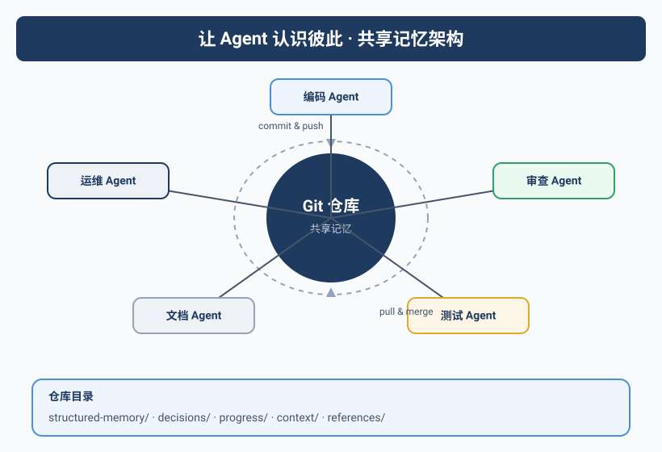
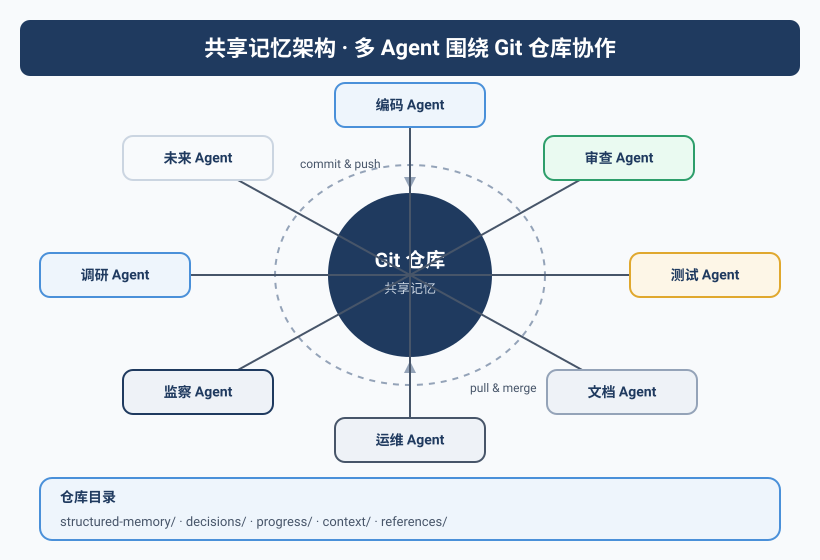

那个文件被同时编辑的夜晚
Kai和Rex在同一条时间线上工作了。
Kai在写 daily-log/2025-06-15.md，记录今天完成的两个代码任务。同时，Rex也在写同样一个文件，汇报今天处理了一次服务器告警。
结果可想而知——后一个写入的覆盖了前一个。
Kai的日志内容丢了。第二天Yason发现Kai在日报里说"完成了两个任务"，但日志里只记了Rex的那一条。
这不是Kai的问题，也不是Rex的问题。这是没有共享记忆系统的后果。
Agent的工作记忆默认是隔离的。如果没有人主动设计共享，每个Agent都活在自己的世界里——这和几个人在一个项目里各写各的文档、各记各的事，没有任何区别。
共享记忆架构设计
Yason的方案听起来很朴素，但实际效果非常好：一个Git仓库，所有Agent共享。
/memory/
├── daily-logs/ # 每日工作日志
│ ├── 2025-06-15-kai.md
│ ├── 2025-06-15-rex.md
│ └── 2025-06-16-kai.md
├── profiles/ # Agent个人档案
│ ├── kai.yaml
│ ├── rex.yaml
│ └── max.yaml
├── skills/ # 技能文件
│ ├── deploy-flow.md
│ └── rollback-procedure.md
├── decisions/ # 决策记录（ADR）
│ ├── agent-routing-decision-001.md
│ └── model-select-002.md
├── requests/ # 跨Agent请求
│ └── 2025-06-16-kai-to-rex.yaml
└── knowledge/ # 共享知识
├── project-map.md
└── common-issues.md
每个Agent在启动时都会加载整个记忆目录，并且知道：
- 哪些文件是自己的（写权限）
- 哪些文件是别人的（只读权限）
- 哪些文件是共享的（读写权限）
权限配置示例：
# /memory/.access-rules.yaml
agents:
kai:
write:
- daily-logs/kai-*.md
- skills/*.md
- requests/*.yaml
read:
- daily-logs/*
- profiles/*
- decisions/*
- knowledge/*
rex:
write:
- daily-logs/rex-*.md
- decisions/*.md
- knowledge/common-issues.md
read:
- daily-logs/*
- profiles/*
- skills/*
Cron同步：每30分钟一次
记忆同步机制很直接——定时任务：
# 每30分钟同步一次记忆
*/30 * * * * /opt/agents/sync-memory.sh
# 每天凌晨归档前一天的日志
0 1 * * * /opt/agents/archive-logs.sh
同步脚本的核心逻辑：
#!/bin/bash
# /opt/agents/sync-memory.sh
MEMORY_DIR="/opt/agents/memory"
LOCK_FILE="/tmp/agent-memory-sync.lock"
# 防并发锁
if [ -f "$LOCK_FILE" ]; then
echo "另一进程正在同步，跳过"
exit 0
fi
trap 'rm -f "$LOCK_FILE"' EXIT
touch "$LOCK_FILE"
cd "$MEMORY_DIR"
# 拉取最新数据
git pull --rebase origin main
# 如果有Agent在本周期内写入了新内容，提交
if [ -n "$(git status --porcelain)" ]; then
git add -A
git commit -m "记忆同步 $(date '+%Y-%m-%d %H:%M')"
git push origin main
fi
关键细节：用
git pull --rebase而不是git pull。因为如果有冲突，rebase会让冲突暴露在同步脚本中，而不是让Agent去处理Git冲突——Agent处理Git冲突的能力非常差。
锁问题：两个Agent写同一个文件
Yason用了最简单的方案来解决并发写入问题：按Agent分文件写入，而不是分目录。
注意上面的文件名命名规则：daily-logs/2025-06-15-kai.md，每个Agent写自己的文件。如果Kai和Rax同时写日志，它们写的是两个不同的文件，永远不会冲突。
但如果确实需要共享写一个文件呢？比如 knowledge/common-issues.md，Kai和Rex都可能更新。
Yason的方案是——指定一个"文件负责人"：
# /memory/.file-ownership.yaml
files:
knowledge/common-issues.md:
owner: rex # Rex负责这个文件
contributors: [kai, max] # Kai和Max可以提交建议，但只能由Rex写入
skills/deploy-flow.md:
owner: kai
contributors: [rex]
Agent在写入共享文件时的流程：
- 如果不是文件owner，把变更写入
requests/目录 - owner在下次同步时看到请求
- owner reviewer后决定是否合并
这听起来有点笨，但Yason试过让Agent直接修改共享文件——不出三天就会有冲突。
共享写是Agent团队的阿喀琉斯之踵。解决方式不是技术，是约定：每个人（每个Agent）有自己的本子，共用的内容由一个人负责维护。
记忆的查询与检索
光存储不够，还得能查到。
Yason给每个Agent配了一个简单的检索工具——基于Embedding的语义搜索：
# /opt/agents/tools/memory_search.py
# 通过Embedding搜索记忆库
import sys
import json
from pathlib import Path
MEMORY_DIR = Path("/opt/agents/memory")
def search(query: str, top_k: int = 5):
"""
在记忆库中搜索与query相关的内容。
搜索范围：daily-logs, decisions, knowledge, skills
"""
# 使用本地Embedding模型做语义搜索
# 简单实现：基于关键词 + 最近修改时间排序
results = []
for f in MEMORY_DIR.rglob("*.md"):
content = f.read_text()
if query.lower() in content.lower():
score = content.lower().count(query.lower())
results.append({
"file": str(f.relative_to(MEMORY_DIR)),
"snippet": content[:200],
"score": score
})
results.sort(key=lambda x: x["score"], reverse=True)
return results[:top_k]
if __name__ == "__main__":
q = sys.argv[1]
print(json.dumps(search(q), indent=2, ensure_ascii=False))
Agent在执行任务前会先搜索记忆库，看是否已有相关决策或知识。
记忆的价值在持续积累
Yason最得意的事不是Agent多能干，而是记忆库变成了团队的"第二大脑"。
6个月后，记忆库里有了：
- 400+ 条日常日志（可追溯每一天发生了什么）
- 37 个决策记录（ADR）
- 15 个技能文件（部署、回滚、常见问题处理）
- 200+ 条共享知识
任何时候新加入一个Agent，只需要给它装上记忆库，它就能在几分钟内了解之前6个月的所有上下文。
记忆库的意义不是存储，是传承。 人的团队里，新人上手需要几周。Agent团队里，新人上手需要一次
git clone。
记忆系统的维护
Yason每周花15分钟做记忆系统维护：
- 清理过期信息：超过3个月的P3决策标记为"历史"
- 合并重复条目：检查是否有多个Agent记录了同一件事
- 补充缺失的决策记录：如果有事发生了但没记，补上
维护频率不必高，但必须做——否则记忆库会变成一个垃圾场，Agent在里面找不到有价值的东西。
从简单Git记忆到RAG架构
当记忆文件超过几百个后，Yason发现简单的关键词搜索开始不够用了。一个Agent要找"三个月前关于数据库连接池的决策"，在400+个文件里搜索"数据库连接池"——返回了太多不相关的结果。
RAG（Retrieval-Augmented Generation）架构解决了这个问题。核心思路很简单：
传统搜索：
关键词匹配 → 返回所有包含该词的文件 → Agent 自己筛选
RAG 搜索：
Embedding 向量化 → 语义匹配 → 返回最相关的3-5个文件 → Agent 直接使用
什么时候该升级到RAG
Yason的经验法则：
| 指标 | 阈值 | 建议 |
|---|---|---|
| 记忆文件数量 | > 500 个 | 需要向量索引 |
| 单次搜索召回率 | < 60% | Embedding能显著提升 |
| Agent找不到历史记录 | 每周≥3次 | 必须上RAG |
| 记忆库体积 | > 100MB | 需要考虑分片和缓存 |
可选向量数据库
| 数据库 | 部署方式 | 适合场景 | 上手难度 |
|---|---|---|---|
| Milvus | 分布式 | 大规模生产环境（百万级向量） | 中 |
| Chroma | 嵌入式 | 中小规模（万级向量），快速原型 | 低 |
| Qdrant | 单机/分布式 | 中等规模，Rust实现，性能好 | 低 |
| Pgvector | 插件 | 已有PostgreSQL的团队 | 低 |
Yason的选择路径：原型用Chroma → 规模大了上Qdrant → 需要强一致性和权限管理上Milvus。
社区的开源记忆方案
搭建完第一版Git记忆系统后，Yason发现社区里已经有成熟的开源方案可以直接用。他自己动手搭的Git仓库+RAG方案虽然能用，但社区方案在功能和生态上要完善得多。
Mem0
Mem0 是一个专为AI Agent设计的记忆层，支持：
- 用户记忆管理：为每个用户维护独立的记忆历史
- 语义搜索：内置Embedding，开箱即用
- 记忆更新：Agent可以主动更新和完善记忆
- 记忆增强：自动从对话中提取关键信息补充记忆
LangMem
LangMem 是LangChain生态中的记忆组件，优势在于：
- 与LangGraph深度集成，可以无缝接入已有Agent框架
- 支持多种记忆类型（会话记忆、实体记忆、摘要记忆）
- 有完善的记忆持久化和检索API
MemGPT（现在叫Letta）
Letta（原MemGPT）是更激进的方案——它把LLM本身的上下文管理也纳入了记忆系统：
- 虚拟上下文管理：Agent的上下文窗口是"虚拟"的，实际可以无限长
- 分层记忆：工作记忆（当前会话）+ 归档记忆（长期存储）
- 自我反思：Agent自动决定什么值得记住、什么可以遗忘
Yason的总结：如果你在10个Agent以内，Git+RAG方案够用。如果要上规模（10+ Agent、1000+ 文件），直接选一个社区方案——Mem0适合轻量接入，Letta适合深度记忆管理。
开源Embedding模型对比
RAG的核心是Embedding模型。Yason测试了几种常见的开源Embedding模型：
| 模型 | 向量维度 | 中文效果 | 推荐场景 |
|---|---|---|---|
| BGE-small-zh-v1.5 | 512 | ⭐⭐⭐⭐ | 轻量级，资源消耗低，CPU可用 |
| BGE-base-zh-v1.5 | 768 | ⭐⭐⭐⭐⭐ | 综合最优，推荐首选 |
| BGE-large-zh-v1.5 | 1024 | ⭐⭐⭐⭐⭐ | 精度最高，但需要GPU |
| text2vec-base-chinese | 768 | ⭐⭐⭐⭐ | 中文专用，社区活跃 |
| gte-Qwen2-1.5B-instruct | 1536 | ⭐⭐⭐⭐⭐ | 最新，基于Qwen2，中文出色 |
Embedding选型没有绝对最好的——只有最合适的。 资源充足的场景选BGE-large或gte-Qwen2，边缘设备上选BGE-small。Yason的经验是BGE-base-zh-v1.5在"精度/速度/资源"三角上最平衡。
本章小结
- 共享记忆是Agent团队的神经系统：一个Git仓库解决
- 按Agent分文件写入，避免并发冲突
- 共享文件指定的owner，其他Agent通过requests提变更
- 30分钟一次cron同步，用rebase避免冲突
- 文件超过500个时，升级到RAG+向量数据库
- 社区有Mem0、LangMem、Letta等成熟开源记忆方案，优先复用
- BGE-base-zh-v1.5是开源Embedding模型的综合首选
- 记忆库是团队的第二大脑，新人（新Agent）一次git clone就能上手
- 每周15分钟维护，保持记忆库的整洁
下一章预告：沟通体系——当Agent开始在群里汇报、艾特、发卡片，群聊变成了控制台。如何让Agent"好好说话"，以及那个哭笑不得的"模型繁忙，请稍后再试"故事。
本文来自专栏《给AI当老板》，完整系列持续更新中：GitHub - VokoForge/ai-prism
